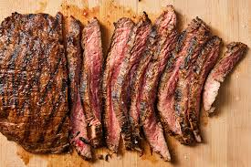

steak

Ingredients:
- Steak
- butter
- salt
- peper
- oil
Step-by-step
- Prep the steaks. Remove the steaks from the refrigerator about 30 minutes to 1 hour before cooking.
- Prepare the rest of the ingredients.
- Season the steaks
- Heat the pan
- cook the steaks
- Flavor and baste the steaks
- Rest the steaks (optional)
- Carve the steak
- enjoy!
home